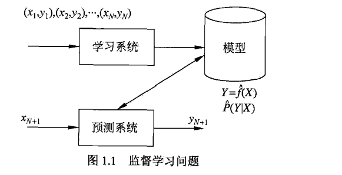

统计学习方法<一>：统计学习方法概论
作者在前言中大致的提到了自己的研究方向，推荐了对于初学者来说相对深奥的《统计学习基础》。讲解了本书的面向读者为：面向将统计学习方法作为工具的科研人员和学生，特别是从事信息检索、自然语言处理、文本数据挖掘及相关研究与开发的科研人员与学生。**在西瓜书中就提到了机器学习和数据挖掘之间的关系，而统计学主要是通过机器学习对数据挖掘发挥影响。**，由此可以得到，学习机器学习的各大算法不也是学习统计学习的方法。
本书系统而详细的介绍统计学习的方法，在内容选取上，侧重介绍那些最重要、最常用的方法，特别是 关于分类与标注问题的方法（聚类无）。每个章节可以单独阅读！
西瓜书和《统计学习方法》参照着阅读，以《统计学习方法》为主，西瓜书为辅，对每个模块进行深入学习，学习各个模块涉及的算法与具体在竞赛中的应用，读书笔记更注重推导，在机器学习算法系列，我将会将具体算法的实现作为主要目的。
本章节叙述统计学习方法的一些基本概念，首先叙述统计学习的定义、研究对象与方法；然后叙述监督学习，这是本书的主要内容；接着提出统计学习方法的三要素：模型、策略和算法；介绍模型选择，包括正则化、交叉验证与学习的泛化能力；介绍生成模型与判别模型；最后介绍监督学习方法的应用：分类问题、标注问题与回归问题。
一 统计学习
1.1 特点
Statistical learning 是关于计算机基于数据构建概率统计模型并运用模型对数据进行预处理与分析的一门学科。统计学习也称为 statistical machine learning .
统计学习的主要特点是：
- 以计算机及网络为平台，建立在计算机及网络之上
- 目的是对数据进行预测和分析
- 以方法为中心，统计学习方法构建模型并应用模型进行预测和分析
- 是概率论、统计学、信息论、计算理论、最优化理论及计算机科学等多个领域的交叉学科
如果一个系统能够通过执行某个过程改进它的性能，这就是学习。
1.2 方法
- supervised learning：本书主要讨论监督学习
- unsupervised learning
- semi-supervised learning
- reinforcement learning
从给定的、有限的、用于学习的训练数据集合出发，假设数据是独立同分布的；并且假设要学习的模型属于某个函数的集合，称为假设空间；应用某个评价标准，从假设空间中选取一个最优的模型，使它对已知训练数据及未知测试数据在给定的标准下有最优的预测；最优模型的选取由算法实现，这样，统计学习方法包括模型的假设空间、模型选择的准则以及模型学习的算法，称为统计学习的三要素：模型、策略、算法。
二 监督学习
监督学习的任务是学习一个模型，使模型能够对任意给定的输入，对其相应的输入做出一个好的预测。
2.1 基本概念
- 输入空间：输入与输出所有可能取值的集合分别称为输入空间与输出空间，输入与输出空间可以是有限元素的集合，也可以是整个欧式空间，输入空间与输出空间可以是同一个空间，也可以是不同的空间；但通常输出空间远小于输入空间。输入输出都用大写字母表示，输入输出的变量都用小写字母表示
- 当输入输出变量均为连续变量的预测问题称为回归问题
- 输出变量为有限个离散变量的预测问题称为分类问题
- 输入变量与输出变量均为变量序列的预测问题称为标注问题
- 特征向量：每个具体的输入是一个实例，通常由特征向量表示，所有特征向量存在的空间称为特征空间。特征空间的每一维对应一个特征。模型实际上都是定义在特征空间上的。
- 联合概率分布：以 $P(X=a,Y=b)$ 假设 $X=a$ 且 $Y=b$ 发生的概率，所有可能发生的概率形成 联合概率质量函数为 $f(x,y)$
$$f(a,b)=P(X=a,Y=b) \qquad 0\leq f(a,b) \leq 1 \qquad 0\leq f(a,b) \leq 1 $$ - 假设空间：模型属于由输入空间到输出空间的映射的集合，这个集合就是 hypothesis space。
2.2 问题的形式化
监督学习利用训练数据集学习一个模型，再用模型对测试样本集进行 prediction。

对输入$x_i$ ，一个具体的模型 $y=f(x)$可以产生一个输出 $f(x_i)$ ，而训练数据集中对应的输出是 $y_i$ ，这个模型越好，它们之间的差就越小。
三 统计学习的三要素
方法 = 模型 + 策略 + 算法
- 模型：确定假设空间
- 策略：按照什么样的准则学习或者选择最优模型，统计学习的目标在于从假设空间中选取最优模型。
A. 损失函数： 一次预测的好坏。
B. 风险函数：平均意义下模型预测的好坏
3.1 损失函数
对于给的的输入$X$,由$f(x)$ 给出相应的输出 $Y$，这个输出的预测值 $f(x)$与真实值 $Y$ 可能一致也可能不一致，用一个损失函数 (loss function)来度量预测错误的程度。损失函数是 $f(X)$ 和 $Y$的非负实值函数，记做 $L(Y,f(x))$。
- 0-1 loss function
$$ f(x)=\left{
\begin{aligned}
x & = & \cos(t) \
y & = & \sin(t) \
z & = & \frac xy
\end{aligned}
\right.
$$